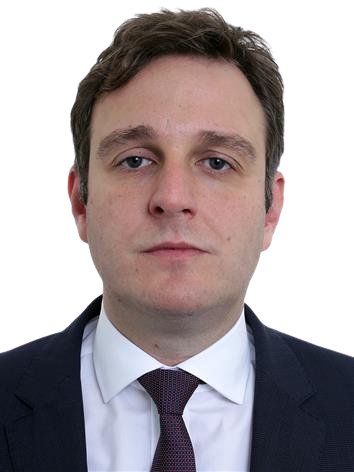

Ricardo Zanatta Guidi
Ricardo Zanatta Guidi, nascido em 28 de setembro de 1977, em Criciúma, é empresário e político com uma sólida trajetória no serviço público. Formado em Direito pela Unesc e com pós-graduação em Gestão Empresarial pela FGV, Ricardo foi Deputado Estadual de 2015 a 2019 e foi eleito Deputado Federal, reeleito em 2023.
Atualmente, Ricardo se candidata à prefeitura de Criciúma, apresentando um plano de governo focado em revitalizar a área central da cidade, incluindo a Praça Nereu Ramos, e restabelecer a Guarda Municipal, extinta em 2017. Ele propõe também a redução gradativa das tarifas de ônibus urbano e a construção de habitações acessíveis para combater o déficit habitacional.
Fonte: https://www.camara.leg.br/deputados/204362/biografia